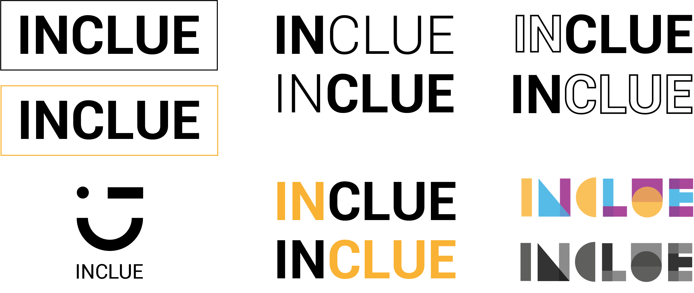
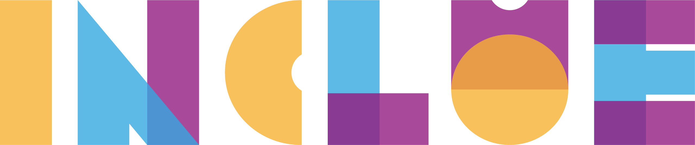
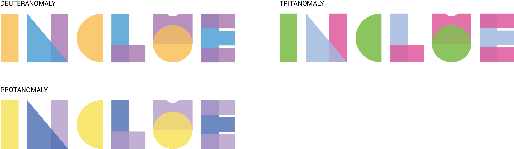
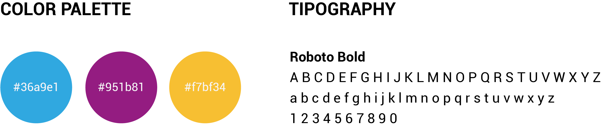
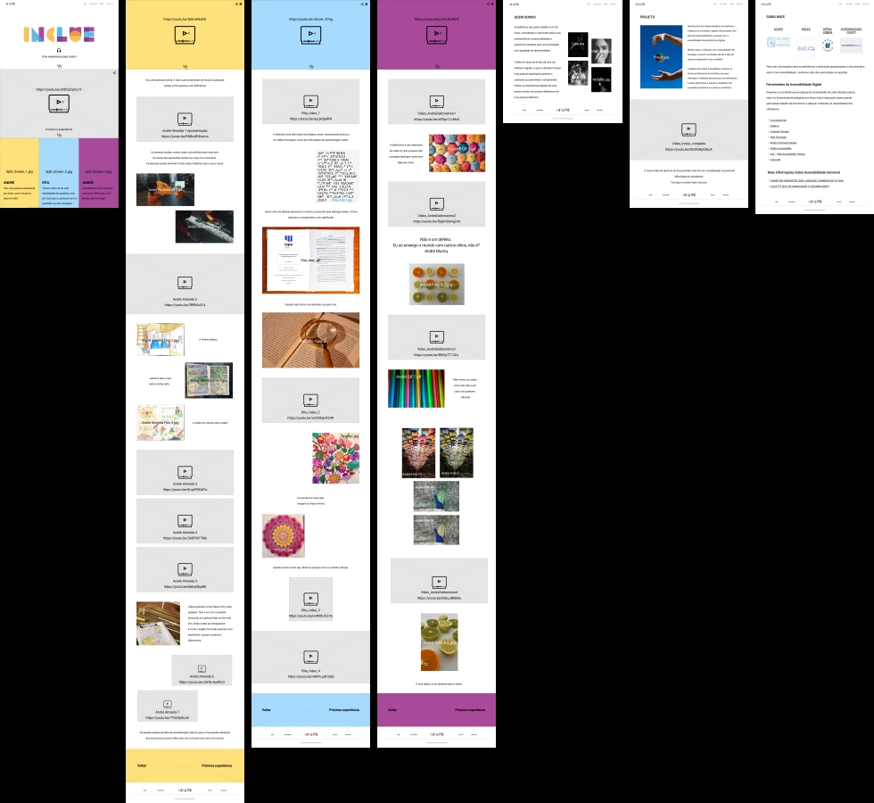
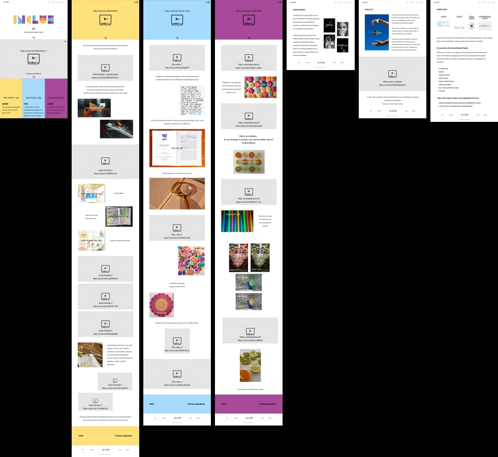

Branding
Branding
Now that we have refined the overall structure of the app, we are
focusing on creating Inclue's branding to effectively communicate
the brand personality through the website.
Logo Design
Inclue was born from the search for a concise name that encapsulates
the essence of the documentary, embodying both its form and content.
The result emerged from the fusion of 'inclusive' and 'clue,' symbolizing
not only inclusion and understanding of diverse experiences and challenges
but also the interactive experience designed to offer users valuable
insights on improving digital accessibility.
After selecting the name, we began experimenting in Adobe
Illustrator, exploring simpler options to make the union of the two
concepts perceptible and more daring ones that took the concepts as a
whole and explored the graphic component.

From the options above, we decided to opt for the one in the bottom
right corner.
We presented our logo proposal to 36 people unfamiliar with our
project's purpose. The conclusion was that 100% of respondents
understood the represented word on the first try. A recurring
observation was that it requires some concentration to perceive,
but it is always correct.
With that in mind, we made minor adjustments to the letters that
people found most challenging to decipher. Without deviating from
the fundamental idea of constructing the word with geometric shapes,
we incorporated miniature elements to enhance the characteristics and
recognition of each letter in the alphabet. Although subtle, the
small openings (visible in the letters N, C, and U) facilitate readability
while preserving the logo's initial aesthetic.

Our logo was constructed based on the Roboto font. Each letter of the word
'Inclue' underwent a geometrization process, incorporating various geometric
shapes with subtle transparencies and overlaps. Given that the word itself
conveys the essence of inclusion, the diverse shapes symbolize unity and
strength, aligning with our primary goal of promoting awareness through an
universally accessible experience. By integrating these geometric elements
into the chosen typography, we imbue it with a distinctive character that
can also serve as versatile graphic elements to complement our identity
in the future.

We conducted a color contrast test on the logo using the Dalton Chrome
plugin. This confirmed that there would be ample contrast between the
selected colors, ensuring easy distinguishability for individuals with
color blindness. In the image above, you can visualize this color conversion,
depicting the most prevalent types of color blindness.
Style Guide
To resonate with a youthful audience, our project's image is vibrant
and brimming with personality. The use of blue aims to convey a sense
of security, stability, and calmness. Yellow, in contrast, brings
vivacity and energy and purple, symbolizing wisdom and knowledge, is
often employed by brands that value humanity as a whole.
The color selection played a pivotal role in our project's overall
development. Our research underscored the importance of choosing
colors with accessibility in mind, emphasizing the play with contrast
to enhance distinguishability.
The selected colors exhibit excellent contrast, ensuring easy differentiation
for individuals with color blindness. While Tritanopia is less common,
the specific shade of purple we chose is visually contrasting for those
with this form of color blindness.
The Roboto font used in the logo will also take a prominent place on the
website. Its simplicity and sans-serif design aim to facilitate reading for
individuals with reduced vision, dyslexia, or cognitive and neurological difficulties.

 
